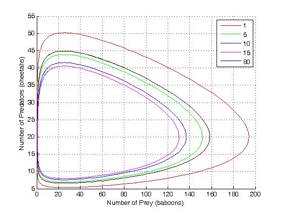

Mathematics 172
Section 001, Fall, 2008
Mathematical Modeling for the Life Sciences.
LeConte
412
Tuesday, Thursday 2:00 p.m. - 3:15 a.m.
Instructor:
Ralph Howard
- Prerequisites:
- C or better in Math 122 or Math 141.
- Text:
- None Required
- Calculators:
- You should bring a calculator to class each day.
Perfered is the TI-83 as this is what will be used for the
demonstrations. There are other types of calculators that will do all
that we need and it is fine if you use one of them (but it you have
trouble with it, I may not be able to help, but I will try),
Remark:
-
The homework, quizes, workseheets, tests, and syllabus
are in pdf format and can
be read with Adobe's Acrobat Reader which can down loaded here.
- Tests:
-
Test 1
- Quizzes:
-
Quiz 1,
Quiz 2,
Quiz 3,
Quiz 4,
Quiz 5,
Quiz 6,
Quiz 7,
Quiz 8,
Quiz 9,
Quiz 10,
Quiz 11,
Quiz 12,
Quiz 13,
Quiz 14,
Quiz 15,
Quiz 16,
Quiz 17,
Quiz 18,
Quiz 19
- Worksheets:
-
Worksheet 1,
Worksheet 2,
Worksheet 3,
Worksheet 4,
Worksheet 5,
Worksheet 6,
Worksheet 7,
Worksheet 8,
Worksheet 9,
Worksheet 10,
Worksheet 11,
Worksheet 12,
Worksheet 13,
Worksheet 14,
Home